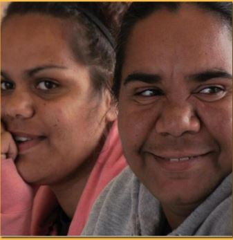
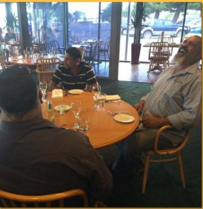

Moordi (salmon)-dhi (Aboriginal people would express their joy when they saw the shoal of a fish)
| Moordidhi | Walara | Maiwarna |
| To rejoice; to exult; to shout | Joyous; funny; droll; witty; intelligent | Full; satisfied with food |
| Ngoorrgoonidhi | Wiyidhi | Moongaldidhi |
| To be happy; to rejoice | To laugh; to rejoice | To be satisfied (with food) |
|  |  |
Seat of emotions
In English, the seat of emotions is the heart. For example, think about the expression “heartbroken.”
On the other hand, the seat of emotions in many Aboriginal languages is the belly.
Let’s take a look at some Western Desert languages like Yankunytjatjara, Pitjantjatjara and several others:
When Aṉangu say “ngayulu tjuni pika” (I — belly — pain/hurt/trouble) it usually means “I’m worried!”
When Aṉangu talk about someone being angry, they often say “liri waru” (throat — fire). For Aṉangu, the throat is the place that gets fired up and wild.
| Barngarla | Meaning | Literally |
| Warna gardindya | Glad | Belly blood |
| Warna moondalya | Glad; merry | Belly sweet |
| Warna moondalyidhi | To feel glad | |
| Warna waiiri | Glad; pleased | Belly healthy |
| Warna waiirridhi | To be pleased | |
| Yoori mandyari | In good humour; glad; merry | Ear nice |
| Yoori marnidhi | To be in good humour; glad; merry | Ear good-to be |
The liver, “ngaldi” is also used to describe feelings.
| Barngarla | Meaning | Literally |
| Ngaldi bagambidhi | Sympathise | liver is full |
| Ngaldi mirirarridhi | Be without feeling; merciless | |
| Ngaldi moorirridhi | Feel well | liver is healthy |
| Ngaldi ngoodharridhi | Worry; fret | liver breaks out |
| Ngaldi yaldadha | Rejoice; celebrate |